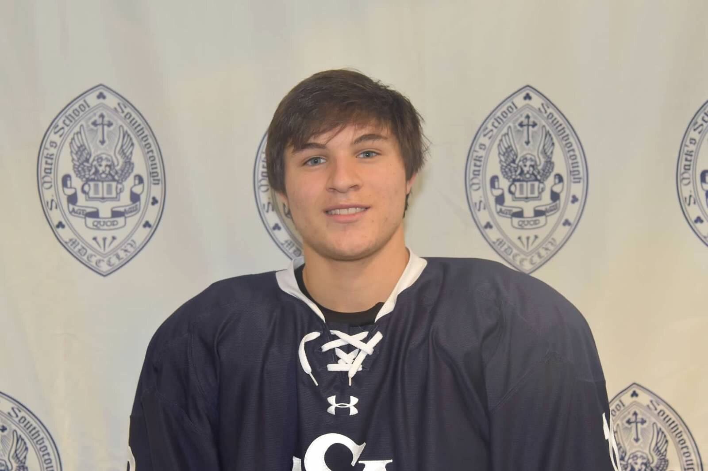
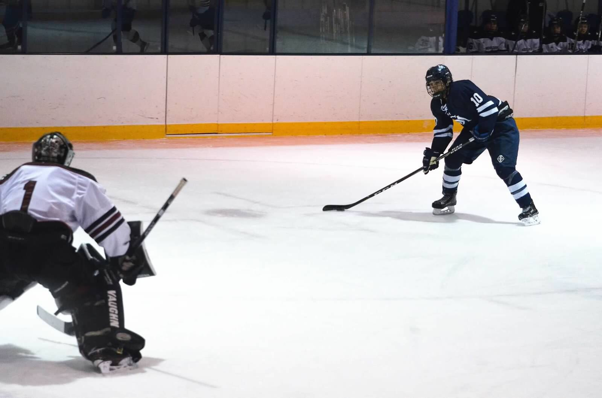

The Dream Danny Ciccarello
Interview by Matt Toporowski
Today, I had the pleasure of interviewing my fellow teamate Danny Ciccarello over facetime during study hall after his hockey practice while he was in Mr. Roche's classroom in the Stem building. Danny is a hard working, intelligent, academic athlete. Danny is also a fellow Canadian from the great white north, but his family ethicity is Italian from Sicily.

I chose Danny to interview because he shares many of the same interests that I do and is similar to myself, we are both from Montreal Canada and both play on the Varsity hockey team.
We will start off this interview with some basic questions.
What is your favorite food? Why?
Danny really enjoys pizza, because his grandmother cooks an amazing pizza in her brick oven, which her uncle from Toronto drove down to hand build.
What is your favorite music? Why do you like it?
Danny likes country music but rap at the same time, country music lightens up the mood and fits in almost any scenario, and rap is perfect for a pre game pump playlist before a game.
What is your favorite vacation place? Why do you have any specific memories that you can share?
Danny enjoys going to florida, because there is always great weather in Florida, and he owns a condo there, and is where he has gone many times before and has many great memories with his family.
How many times a year do you go?
Danny goes to Florida twice a year with his family over vacation.
How many family members do you have?
Danny has six other family members, which include his mom and dad, his older brother who is 20, younger brother who is 14, and his two twin sisters who are nine.
What is one thing in the world that you would like to accomplish (when you are older?)
He would like to grow up and play in the NHL for a living.
Has this always been a dream for you?
Ever since he strapped on the skates as a kid it has always been a possibility and a dream that will hopefully someday come true.
Who would you most enjoy playing for in the NHL and why?
His dream team is the Toronto maple leafs, because he wants to carry the maple leaf of his country on his chest.
What is one thing in the world that you would like to change?
He would like to change the curve on his hockey stick so he could score some breakaways in his hockey games, which he has been struggling to do lately.
What is one thing in the world that makes you most happy?
His hockey stick, it has a special name Leslie, and he tapes her before every game, to keep her protected.
Since our main focus has been hockey we will continue on that topic

Why do you enjoy the game so much?
Danny’s father Frank was a big hockey player and hockey fan, and got Danny into the game, and now he just wants to make his father proud.
Do you ever get nervous for hockey games?
Hockey for him is strictly business and Danny is always prepared never nervous.
What position do you play and what style do you play?
Danny is a offensive minded forward who enjoys flying the zone in search of breakaways that he hopes to one day score.
Thank you for chatting with me it was a pleasure talking to you.
The pleasure was all mine.